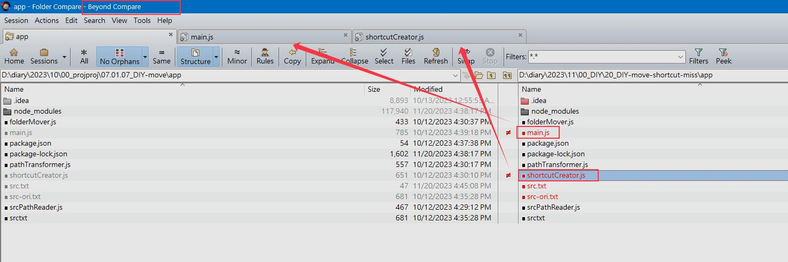
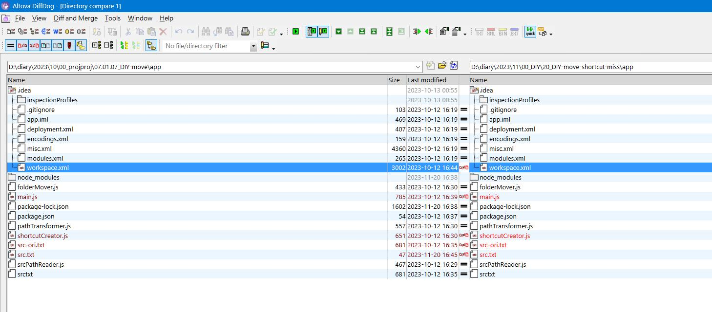
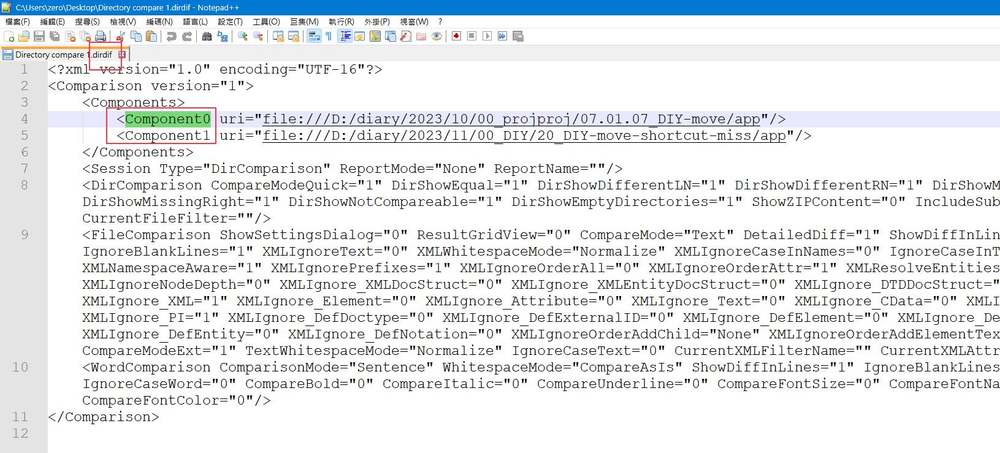

26-01-26_compare-diff-folder
要直接使用版本控制來進行歷史版本的比對， 有一點麻煩，因為git每一次進行commit的時候都還蠻嚴謹的。但是我在進行日記版本比對的時候。是比較隨性的。就是當下完成之後並不會做一堆很仔細地歸納動作。所以要怎麼樣對於這一些比較沒有那麼嚴謹的日記資料做比對呢？與其使用版本控制還不如直接使用比對軟體。beyond compare是一套可以試用，然後功能也不錯,進行比對的時候，效果清楚。
而且最重要的事情是他有辦法使用命令列的功能。 從他所儲存出來的檔案就看得出來。它的核心價值就是2個路徑，互相比較。只要你能夠設定這2個路徑的話。就能夠自行定義要如何比較，這將是一個非常有彈性的功能。
beyond-diff-compare-for-version

what-file-change

path-for-two-folder-diff-data
